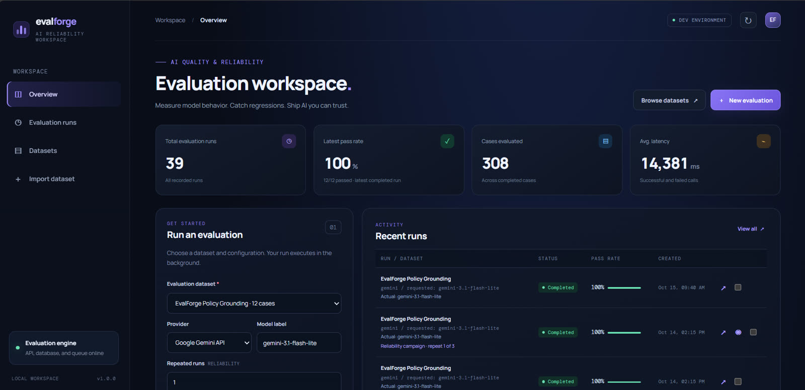
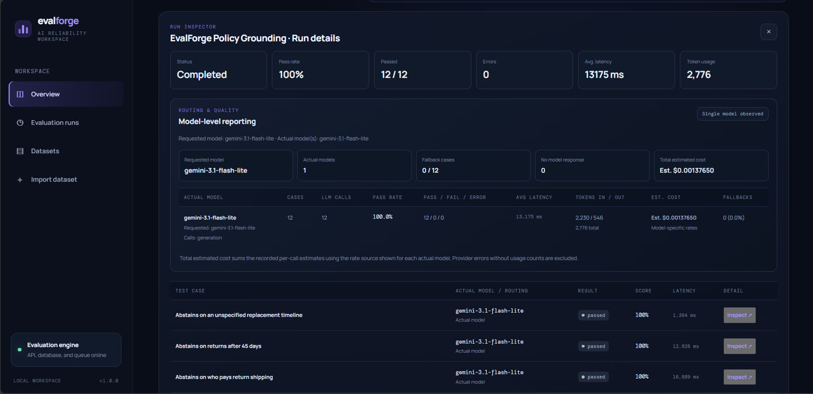

01 / PROBLEM
Repeatable checks, not one good demo.
AI responses can vary between runs, providers, and model versions. A single successful response does not show whether behavior is consistent or whether a change caused a regression. EvalForge was built to make evaluation runs inspectable and repeatable by keeping datasets, graders, outputs, and run results together.
02 / SOLUTION
Saved runs and per-case results.
The platform accepts versioned JSON datasets, queues evaluation work, calls a selected provider adapter, grades each response, and records the result and execution details. The dashboard provides recent-run pagination, dataset management, a run inspector, run comparison, and reliability reporting.
| Component | Responsibility | Implementation |
|---|---|---|
| API | Accepts dataset and evaluation requests, returns run identifiers, and serves reports. | Node.js / Express |
| Data store | Persists datasets, versions, runs, per-case outcomes, and traces. | PostgreSQL |
| Queue | Moves evaluation work outside the request-response cycle. | Redis / BullMQ |
| Worker | Executes queued evaluation cases and records completion or error states. | Node.js worker |
| Provider adapters | Connects to deterministic mock responses and live model providers. | Mock, Gemini, OpenAI |
| Dashboard | Displays recent runs, datasets, graded cases, model details, and reliability summaries. | Web interface |
03 / ARCHITECTURE
Runs in the background, API stays fast.
The API creates and tracks work. Redis and BullMQ hold queued jobs, and a separate worker processes the evaluation. PostgreSQL stores the data needed to inspect what was tested and how each case finished.

04 / EVALUATION FLOW
From dataset to inspectable report.
- Prepare a dataset: create or import JSON test cases, then save edits as a new immutable dataset version.
- Queue a run: submit an evaluation request. The API returns a run identifier while background processing continues.
- Call a provider: the worker executes cases using the Mock provider, Google Gemini, or OpenAI adapter.
- Grade the response: configured graders check output behavior and capture tool/function call proposals without executing them.
- Persist each case: store pass/fail/error status, response details, traces, actual model information, latency, and token usage when available.
- Inspect and compare: review the run, compare it with another run, or start a repeated-run reliability campaign.
05 / GRADING
Explicit graders, visible criteria.
The project includes rule-based graders for non-empty output, required and forbidden keywords, exact-match and expected-output phrases, valid JSON, context-aware abstention, and required or forbidden tool calls. An optional LLM-as-judge can apply a rubric, but its output is treated as a model-generated assessment that needs calibration, not as ground truth.
Deterministic checks
Keyword, exact-match, JSON, and tool-call checks produce inspectable pass or fail results.
Context-aware checks
Abstention checks can verify whether the assistant avoids answering when the supplied context is insufficient.
Optional judge
An LLM judge can score against a rubric, with the limitation that judge results are not ground truth.
Captured traces
Tool/function call proposals are recorded for assessment. EvalForge does not execute those calls.
06 / OBSERVABILITY
Record what actually happened during a run.
EvalForge separates the requested model from the model that actually responded. This matters when a provider fallback is used. Run details include fallback reasons, provider errors, latency, token counts, and cost estimates based on configured rates. Cost figures are estimates from recorded usage and project configuration, not billing statements.
07 / VALIDATION
Tested with suites and a live dataset.
The repository README records the following validation snapshot from project development. The figures describe the listed test suite and the specific Policy Grounding dataset, not a general guarantee that a model will always be correct.
How to read these results: Policy Grounding uses a synthetic demonstration policy. The dataset is small, and three repetitions are an encouraging smoke test, not a large statistical sample. Cases and graders should be reviewed before adapting the setup to an organization's real policies.
08 / SCOPE & LIMITATIONS
A portfolio MVP on solid foundations.
EvalForge demonstrates backend patterns such as asynchronous job processing, persistence, dataset versioning, provider adapters, trace capture, and automated regression checks. It is not presented as a hardened public multi-tenant service.
Access control is not implemented
Authentication, per-user permissions, run ownership, and multi-tenant isolation are not implemented. Do not expose an unprotected instance with real user data or secrets.
Live model output can vary
Graders need representative cases and careful calibration. Fallback may also produce mixed-model runs that should not be treated as a strict single-model benchmark.
Judge results need review
The optional LLM judge can be wrong and should be checked against labeled examples before its scores are relied on.
Evaluation is not deployment proof
Small datasets and few repetitions provide limited evidence. Broader datasets and operational hardening remain future work.
09 / EVIDENCE
Inspect the dashboard and run-level views.
These screenshots are embedded from the public EvalForge repository. Open the repository for the full project source, setup instructions, automated test workflow, and validation notes. The image files are stored in the repository under docs/screenshots.
Open the screenshot files in GitHub




10 / REPOSITORY
Explore the implementation.
The public repository includes the Express API, worker, database migrations, Docker Compose setup, dashboard, automated tests, screenshots, and project documentation.